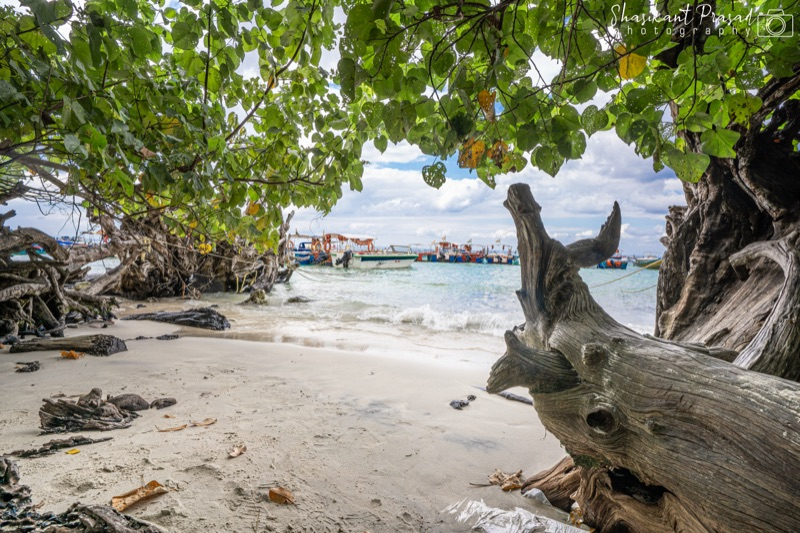
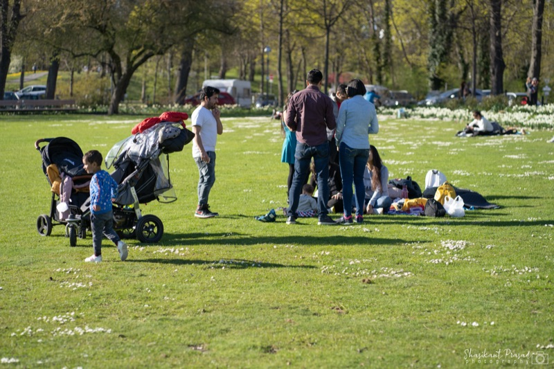
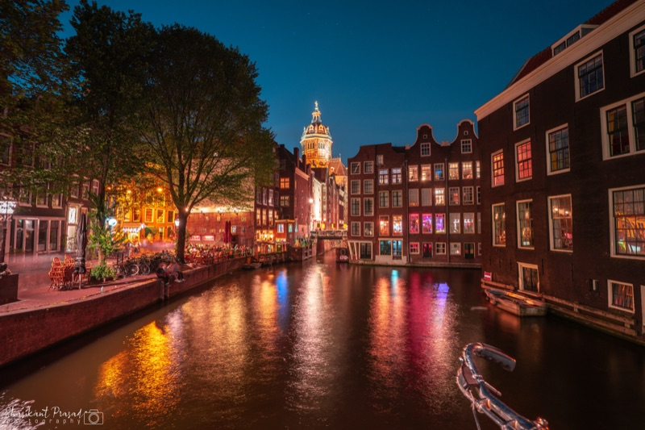
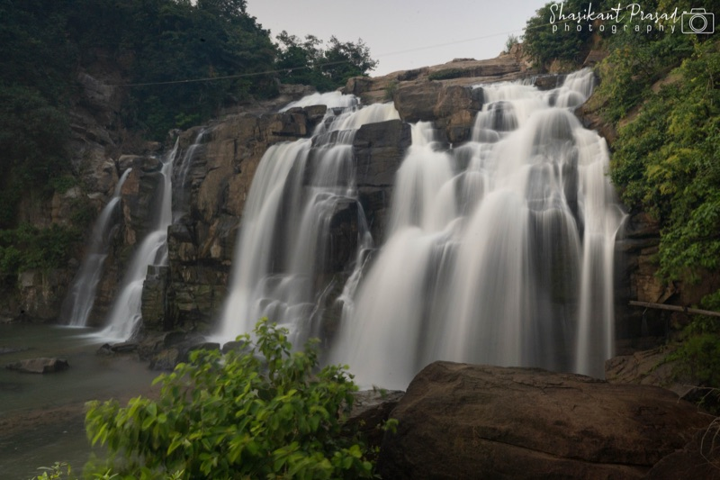
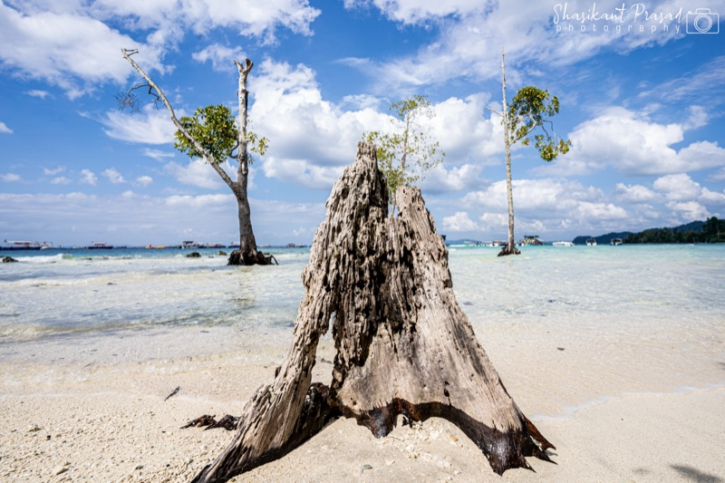

Coastal & Islands
Havelock Island, Andaman
Andaman Horizon #01
17mm • f/11 • 1/50s • ISO 100
The flagship portfolio of Shashikant Prasad. Discover a 45-piece fine-art landscape photography showcase alongside exhaustive, turn-by-turn expedition masterplans across untouched landscapes.
A selection of 6 highlights from the complete 45-piece fine-art collection. Captured on Sony Alpha 7 III with authentic camera telemetry.

17mm • f/11 • 1/50s • ISO 100
24mm • f/8 • 1/160s • ISO 100

28mm • f/7.1 • 1/200s • ISO 100

17mm • f/8 • 30.0s • ISO 100

24mm • f/9 • 1/125s • ISO 100

20mm • f/10 • 1/60s • ISO 100
Field-tested travel chronicles engineered with turn-by-turn road logistics, vehicle choices, authentic budgets, and high-impact photography.

Crystalline Umngot riverbeds, sapphire plunge pools of Krang Suri, ancient living root bridges, and rolling pine ridges of Laitlum Canyons. Dedicated SUV logistics and family pacing.
Remote island expeditions across Havelock, Neil, and Port Blair. Mangrove kayaking, solitary sunset horizons at Radhanagar, and coastal reef telemetry.
Shashikant Prasad is an explorer and visual storyteller dedicated to documenting untouched wilderness, atmospheric frontiers, and remote geographies. Every frame is captured with real natural light and authentic exposure telemetry.
The platform brings together fine-art visual archives and battle-tested overland masterplans, engineered for travelers and collectors who value authentic craftsmanship.
Sony Alpha 7 III full-frame system paired with prime ultra-wides (17mm–24mm) and telephoto glass. No generative AI or synthetic sky replacements.
Every itinerary is calculated with road elevations, low-impact pacing, verified local operators, and GPS-verified trailheads.
Built as independent spokes under a unified domain. Each spoke maintains its own dedicated experience, styling tokens, and deployment pipeline.
Optimized display tiers with native aspect-ratio containers, smooth modal micro-interactions, and fast load times.
For fine-art print acquisitions, licensing, expedition collaboration, or technical discussions, reach out directly.
shashikantprasadweb@gmail.com